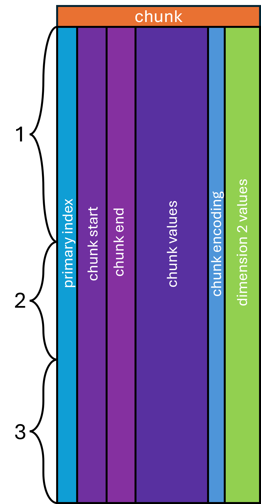

Chunked Layout¶
The chunked layout treats one array — which must be sorted — as the "main"
axis, cutting it into chunks of a fixed size along that coordinate space (for
example steps of 50 m/z) and taking the same segments from the parallel arrays.
The main axis chunks' start, end, and a repeated index are recorded as columns;
each array may then be stored as-is or with an opaque transform (delta encoding,
Numpress, …). The start/end interval permits granular random access along both
the main axis and the source index. The top-level schema node is named chunk,
and the entity index column MUST be its first column.

| chunk | |||||
|---|---|---|---|---|---|
| spectrum_index | mz_chunk_start | mz_chunk_end | mz_chunk_values | chunk_encoding | intensity |
| 1 | 200 | 250 | [0.0013, …, 0.0013] | MS:1003089 | […] |
| 1 | 250 | 300 | [0.0014, …, 0.0014] | MS:1003089 | […] |
| 1 | 500 | 550 | [0.0014, …, 0.0015] | MS:1003089 | […] |
| … | … | … | … | … | … |
| 2 | 200 | 250 | [0.0013, …, 0.0013] | MS:1003089 | […] |
| 2 | 350 | 400 | [0.0014, …, 0.0014] | MS:1003089 | […] |
| 2 | 400 | 450 | [0.0013, …, 0.0014] | MS:1003089 | […] |
This example uses delta encoding for the m/z chunk values, which is reconstructed
with very high precision for 64-bit floats. The m/z values inside
mz_chunk_values are not visible to the page index, but the _chunk_start and
_chunk_end columns are. The chunk values remain subject to Parquet encodings,
so they can be byte-shuffled for further compression.
Column naming rules¶
<entity>_index(integer) — the index key for the entity this chunk belongs to.<array_name>_chunk_start(float64) — the first coordinate value in the chunk, inclusive. Its array-indexbuffer_formatMUST bechunk_start.<array_name>_chunk_end(float64) — the last coordinate value in the chunk, inclusive. Its array-indexbuffer_formatMUST bechunk_end.<array_name>_chunk_values(list) — the encoded coordinates fromarray_nameaccording tochunk_encoding. Its array-indexbuffer_formatMUST bechunk_values.chunk_encoding(CURIE) — how<array_name>_chunk_valueswere encoded; see Chunk encodings. Its array-indexbuffer_formatMUST bechunk_encoding.
All other columns are expected to be list arrays whose names are simply their
array_name (with buffer_format chunk_secondary), or surrogate arrays with
buffer_format chunk_transform.
Splitting data into chunks¶
A chunk table may be partitioned in any pattern, as long as the chunks are
non-overlapping and ascending. The chunking procedure must be null-aware — in
particular, aware of the null pairs that mark masked regions. The granularity
is configurable, trading random-access granularity against compression
efficiency.
Python — partitioning into chunks of width k with null pairs present
import pyarrow as pa
def null_chunk_every(data: pa.Array, width: float) -> list[tuple[int, int]]:
"""
Partition a sorted numerical array into segments spanning `width` units.
This operation is null-aware, so sparse arrays can be partitioned.
Returns the (start, end) index of each chunk.
"""
start = None
n = len(data)
i = 0
# Find the first non-null position
while i < n:
v = data[i]
if v.is_valid:
start = v.as_py()
break
else:
i += 1
# If we never found a non-null position, just return a single chunk
if start is None:
return [(0, n)]
chunks = []
offset = 0
threshold = start + width
i = 0
while i < n:
v = data[i]
if v.is_valid:
v = v.as_py()
if v > threshold:
if ((i + 1) < n) and (not data[i + 1].is_valid):
while ((i + 1) < n) and (not data[i + 1].is_valid):
i += 1
# Avoid a chunk of length 1, especially a null point; if so,
# relax the width requirement.
if i - offset > 1:
chunks.append((offset, i))
offset = i
while threshold < v:
threshold += width
# Look ahead: this value is null, but the next is not.
elif ((i + 1) < n) and (data[i + 1].is_valid):
i += 1
v = data[i].as_py()
if v > threshold:
i -= 1
chunks.append((offset, i))
offset = i
while threshold < v:
threshold += width
i += 1
if offset != n:
chunks.append((offset, n))
return chunks
Chunk encodings¶
Basic encoding¶
Chunk-encoding CV term:
MS:1000576— no compression
When storing centroids, or data that are not similarly spaced (as is usually the case for pre-centroided spectra), but still wanting the chunked layout, no special encoding of the chunk values is necessary. Values within each chunk are written as-is to the chunk-values array. This does not improve compressibility, but it keeps a consistent schema for other entries that would benefit from a different encoding.
Note
The start point is excluded from the chunk-values array.
Delta encoding¶
Chunk-encoding CV term:
MS:1003089— truncation, delta prediction and zlib compression
When data lie on a locally (almost) uniform grid using 64-bit floats, compression improves by computing a delta encoding of the coordinates.
Note
The start point is excluded from the chunk-values array.
Python — null-aware delta encode/decode
import pyarrow as pa
def null_delta_encode(data: pa.Array) -> pa.Array:
"""
Delta-encode an Arrow array containing nulls. Nulls are encoded as null
values and treated as 0.0 for the purpose of computing the next delta.
"""
acc = []
it = iter(data)
# The first entry is the point of reference but not part of the delta
# sequence unless it is `null`.
last = next(it)
if not last.is_valid:
acc.append(last)
for item in it:
if item.is_valid:
val = item.as_py()
if last.is_valid:
acc.append(pa.scalar(val - last.as_py()))
else: # treat the last value as 0.0
acc.append(item)
last = item
else:
acc.append(item) # carry the null forward
last = item
return pa.array(acc)
def null_delta_decode(data: pa.Array, start: pa.Scalar) -> pa.Array:
"""Decode an Arrow array that was delta-encoded *with* nulls."""
acc = []
if not data[0].is_valid:
if not data[1].is_valid:
# started at a non-null value immediately followed by a null pair
acc.append(start)
start = pa.scalar(None, data.type)
else:
acc.append(start.as_py())
last = start
for item in data:
if item.is_valid:
val = item.as_py()
if last.is_valid:
last = pa.scalar(val + last.as_py())
acc.append(last)
else: # last value assumed zero
acc.append(item)
last = item
else:
acc.append(item)
last = item
return pa.array(acc)
Numpress linear encoding¶
Chunk-encoding CV term:
MS:1002312— MS-Numpress linear prediction compression
This uses the MS-Numpress linear-prediction method (10.1074/mcp.O114.037879) to compress the chunk values as raw bytes. Numpress produces a buffer of an 8-byte fixed point, a 4-byte value 0, a 4-byte value 1, and then 2-byte residuals for all subsequent values. The array is therefore, by definition, not alignable to a 4- or 8-byte type. It also has no concept of nullity, which makes it incompatible with null marking.
To store Numpress-linear-encoded arrays, an extra column
<array_name>_numpress_linear_bytes is added alongside the
<array_name>_chunk_values column. It is a list of byte arrays
(large_list<u8> in Arrow parlance — not large_binary; see the
discussion of string-type "optimisation").
Its array-index entry MUST have buffer_format chunk_transform and the
same array type, array name, data type, unit, and data-processing ID as the
_chunk_values column. The transform field MUST be MS:1002312.
Note
The start point is included in the chunk-values array — it is a specific component of the Numpress-encoded bytes.
Opaque array transforms¶
Sometimes we prefer to store data lossily in non-uniform, unaligned, or otherwise
non-standard types that have no physical representation in Parquet. MS-Numpress's
short logged float (SLOF) and positive-integer encodings are good examples. While
Numpress-linear handles the coordinate dimension, opaque transforms can also
encode the secondary arrays in chunks. These columns are recorded in the array
index with buffer_format chunk_transform, and the transform field is the
CURIE for the relevant method — for example
MS:1002314 for MS-Numpress SLOF.
The column's physical type MUST be a list of byte arrays, though the type in
the array index MUST be the decoded array's real type. Column names
SHOULD be of the form <array_name>_<transform_name>_bytes, e.g.
intensity_numpress_slof_bytes.
Reading a single entry from the chunked encoding¶
To read a single entry (spectrum, chromatogram, …) stored in chunks:
- Identify which columns are annotated as
chunk_start,chunk_end,chunk_encoding, andchunk_valuesin the array index. The<entity_type>_indexcolumn MUST be the first column in the table, so it always has index 0. - Find the row group containing the entry's index value via the row-group metadata. Optionally, if the page index is available, find the row ranges of the pages that contain that index.
- Read the selected row group (or page row range) and filter to rows whose
<entity_type>_indexequals the entry's index. - Optionally, sort the rows by their
chunk_startvalue — usually ascending for the quantity being measured. - Process each selected row, decoding its
chunk_valuesaccording tochunk_encodingand anytransformin the array index. Unpack thechunk_secondarycolumns and apply any transforms, accumulating each column's arrays across rows. Some transforms require additional information from the entity's metadata table. - If the entry has additional auxiliary arrays, read and decode them from the metadata table.